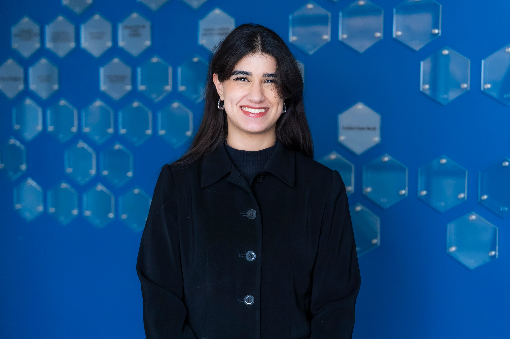

Open to remote Data & AI opportunities
Hello, I’m
Elene V
Hovsepyan
Data Scientist, AI Engineer and analytical problem-solver.
I build data-driven systems, machine-learning solutions, analytical tools, and AI-powered automations that turn complex information into practical business value.

Current focus
Data, AI & Automation
Based in
Yerevan, Armenia
01
About me
Curiosity turned into technology.
I am completing my bachelor’s degree in Data Science with a track in Business Analytics and a minor in Environmental Science at the American University of Armenia.
I enjoy understanding how things work and then building better ways to solve issues. From AI-powered automation and machine learning to data analysis and software development, I like creating tools that simplify complex processes and have a real impact.
I have professional experience building AI-powered research and outreach workflows, working with APIs, processing data, developing websites, and creating analytical tools. I also teach Python, which has strengthened both my technical foundations and my ability to explain difficult ideas clearly.
02
Experience
Work that combines technology and impact.
Oct 2025 — Present
Junior AI Engineer
LinkyJuice
Design and develop AI-powered automation systems that streamline web research, keyword discovery, SEO analysis, outreach workflows, and large-scale data processing. Integrate external APIs, optimize internal business processes, and build analytical tools that improve efficiency and support data-driven decision-making.
Python
Apps Script
REST APIs
OpenAI API
Automation
Webflow
Jul 2025 — Feb 2026
Research Assistant
AUA Acopian Center for the Environment
Supported environmental research by conducting GIS and spatial analyses, preparing and organizing datasets, coordinating field surveys, and contributing to the development of interactive geographic information systems for environmental decision-making.
ArcGIS
QGIS
Data Analysis
Research
Environmental Data
Jun 2026 — Present
Python Instructor
Artsakhy Center
Teach introductory Python programming to students aged 13–20, helping them build strong foundations in programming logic, problem-solving, Boolean algebra, conditional statements, and computational thinking.
Python
Teaching
Mentoring
Communication
03
Selected projects
Ideas transformed into working systems.
04
Skills
Skills that organize themselves into the way I work.
As you move through this section, individual tools settle into their professional families. Select any skill to see where I learned it and how I use it.
Let’s work together
Have a meaningful problem that data can solve?
I am currently interested in remote opportunities involving data analysis, machine learning, AI automation, business intelligence, environmental analytics, and technical problem-solving.
Start a conversation →